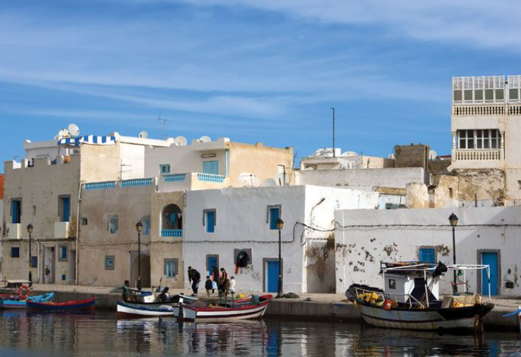
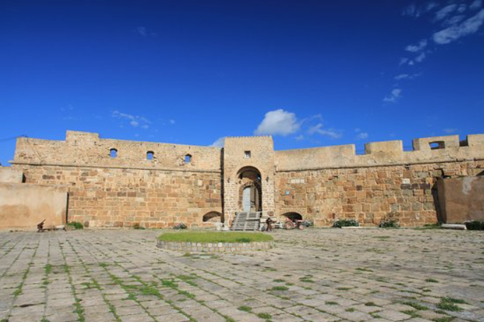
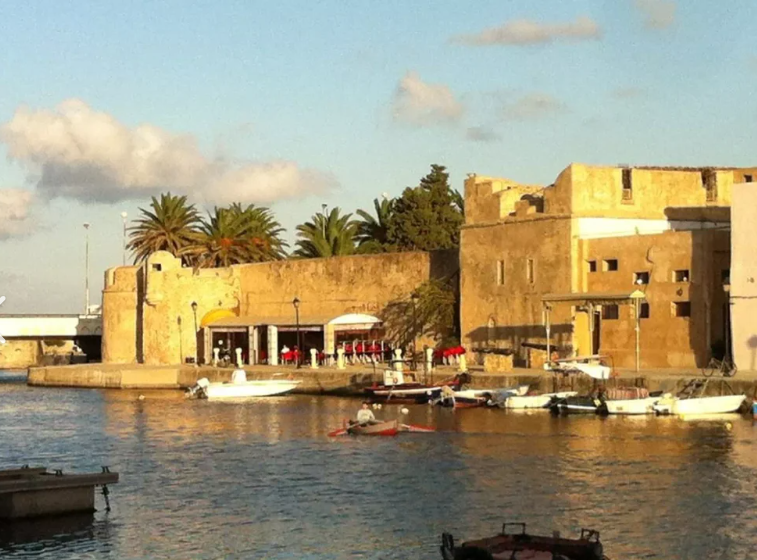
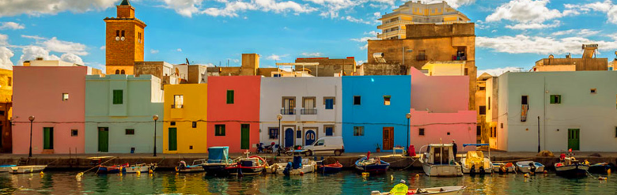
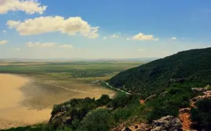

La Perle du Nord

Bizerte est un gouvernorat situé à l'extrême nord de la Tunisie, bordé par la mer Méditerranée. C'est une région stratégique qui possède le plus grand port naturel d'Afrique du Nord.
La ville de Bizerte, chef-lieu du gouvernorat, est connue pour son vieux port, sa médina authentique et ses plages magnifiques. Elle a joué un rôle important dans l'histoire militaire et maritime de la Tunisie.
Le gouvernorat combine richesse historique et beauté naturelle, avec ses lacs, ses plages et son patrimoine architectural unique mêlant influences arabe, turque et française.
Le vieux port de Bizerte est l'un des plus pittoresques de Méditerranée, avec ses bateaux de pêche colorés et son canal reliant le lac au port.
Bizerte possède des plages exceptionnelles comme la Corniche, Rimel et Sidi Salem, réputées pour leur sable fin et leurs eaux cristallines.
Le plus grand lac naturel de Tunisie, offrant des paysages magnifiques et une riche biodiversité avec de nombreuses espèces d'oiseaux migrateurs.
Célèbre pour ses fruits de mer frais, le couscous au poisson et la chakchouka bizertin, une spécialité locale unique.

Construit au XVIe siècle par les Espagnols, ce fort domine la ville et offre une vue panoramique exceptionnelle sur Bizerte, le lac et la mer Méditerranée.

Une forteresse ottomane construite au XVIIe siècle qui témoigne de l'importance stratégique de Bizerte. Elle abrite aujourd'hui un musée océanographique.

Le cœur battant de la ville, un site historique et pittoresque avec ses quais animés, ses cafés traditionnels et son atmosphère maritime authentique.

Classé patrimoine mondial de l'UNESCO, ce parc naturel unique abrite le lac Ichkeul et constitue un sanctuaire pour des milliers d'oiseaux migrateurs.